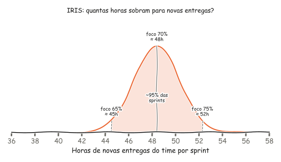

Contexto
Time de 4 pessoas, 250 horas brutas por mês (total do time) e sprints de duas semanas.
Premissa: as 250 horas são o total do time no mês, ou seja, cerca de 62 horas por pessoa, o que indica dedicação parcial.
Passo a passo
- Converta as horas do mês para a sprint. Um mês tem cerca de 21 dias úteis e a sprint tem 10, então cada sprint fica com aproximadamente metade das horas mensais: 125 horas brutas. Isso dá cerca de 31 horas por pessoa por sprint, ou pouco mais de 3 horas por dia.
- Desconte as ausências. Férias, feriados, folgas e treinamentos saem antes de tudo. Cada dia de ausência de uma pessoa tira cerca de 3 horas.
- Desconte as cerimônias. Elas custam quase o mesmo tempo com dedicação integral ou parcial, por isso pesam muito num time como este. Num formato enxuto, somam cerca de 8 horas por pessoa por sprint.
- Aplique um fator de foco. Parte das horas restantes vai para e-mails, reuniões externas, dúvidas de outros times e troca de contexto. Com dedicação parcial, o realista é entre 65% e 75%.
- Divida o que sobra por tipo de trabalho. Reserve fatias fixas para produto, para bugs e débito técnico, e para imprevistos.
Distribuição do time por sprint no SCRUM
| Etapa | Cálculo | Horas | Racional |
|---|---|---|---|
| Horas brutas | 250h ÷ 2 | 125h | Uma sprint de 10 dias úteis equivale a cerca de metade do mês (≈21 dias úteis). Isso dá ~31h por pessoa por sprint, ou ~3,1h por dia. |
| Ausências | nenhuma prevista | 125h | Férias, feriados, folgas e treinamentos saem primeiro. Cada dia de ausência de uma pessoa tira ~3,1h. |
| Cerimônias | 8h × 4 pessoas | −32h → 93h | Por pessoa: planning 1,5h + dailies 2,5h (15 min × 10) + refinamento 1,5h + review 1h + retrospectiva 1h = 7,5h, arredondado para 8h. Isso representa ~26% das horas brutas. |
| Fator de foco | 93h × 75% | ≈ 70h | E-mails, reuniões externas, dúvidas de outros times e troca de contexto consomem parte das horas. Com dedicação parcial, o realista é entre 65% e 75%. |
| Itens de produto | 70h × 70% | ≈ 49h | Maior fatia, para histórias e melhorias que geram valor ao negócio. É a base do compromisso da sprint. |
| Bugs e débito técnico | 70h × 20% | ≈ 14h | Fatia fixa para que correções e melhorias técnicas não sejam sempre adiadas. |
| Reserva para imprevistos | 70h × 10% | ≈ 7h | Folga para incidentes, suporte e pedidos urgentes. Suba para 15% a 20% se o suporte for frequente. |
Das 125 horas brutas, cerca de 49 horas por sprint vão para novas entregas. Com fator de foco de 65%, esse número cai para cerca de 42 horas.
A mesma conta por pessoa
| Etapa | Horas por pessoa |
|---|---|
| Horas brutas | ≈ 31h |
| Após cerimônias | ≈ 23h |
| Produtivas (75%) | ≈ 17h |
| Itens de produto | ≈ 12h |
| Bugs e débito técnico | ≈ 3,5h |
| Reserva | ≈ 1,5h |
Essa visão ajuda no planning: cada pessoa tem só cerca de 12 horas por sprint para itens de produto. Uma tarefa de 16 horas não cabe na sprint de ninguém.
Distribuição do time por sprint no IRIS
| Etapa | Cálculo | Horas | Racional |
|---|---|---|---|
| Horas brutas | 250h ÷ 2 | 125h | Mesma base do SCRUM: ~31h por pessoa por sprint, ou ~3,1h por dia. |
| Ausências | nenhuma prevista | 125h | Férias, feriados, folgas e treinamentos saem primeiro. Cada dia de ausência de uma pessoa tira ~3,1h. |
| Cerimônias | 3,5h × 4 pessoas | −14h → 111h | Por pessoa: planning 0,5h + dailies 2,5h (15 min × 10) + review e retrospectiva juntas 0,5h = 3,5h. O refinamento deixou de ser cerimônia. As cerimônias caem para ~11% das horas brutas. |
| Fator de foco | 111h × 75% | ≈ 83h | E-mails, reuniões externas, dúvidas de outros times e troca de contexto consomem parte das horas. Com dedicação parcial, o realista é entre 65% e 75%. |
| Itens de produto | 83h × 70% | ≈ 58h | Maior fatia, para histórias e melhorias que geram valor ao negócio. Inclui o refinamento, que agora é uma tarefa da sprint (~1,5h por pessoa, ~6h no time). |
| Bugs, débito técnico e imprevistos | 83h × 30% | ≈ 25h | Bugs e débito técnico viraram tarefas e dividem a mesma fatia com a folga para incidentes, suporte e pedidos urgentes. |
Das 125 horas brutas, cerca de 52 horas por sprint vão para novas entregas (58h de itens de produto menos ~6h de refinamento), contra cerca de 49 horas no SCRUM. Com fator de foco de 65%, esse número cai para cerca de 45 horas.
A mesma conta por pessoa
| Etapa | Horas por pessoa |
|---|---|
| Horas brutas | ≈ 31h |
| Após cerimônias | ≈ 28h |
| Produtivas (75%) | ≈ 21h |
| Itens de produto (com refinamento) | ≈ 14,5h |
| Bugs, débito técnico e imprevistos | ≈ 6h |
Descontado o refinamento, cada pessoa tem cerca de 13 horas por sprint para novas entregas, uma hora a mais que no SCRUM.

Cuidados específicos para o time
Nos dois modelos
- Quebre as tarefas em blocos de 3 a 6 horas, que caibam em um ou dois dias da pessoa. Tarefas grandes num time de dedicação parcial viram itens que atravessam sprints. Com 12 a 13 horas de novas entregas por pessoa, uma tarefa de 16 horas não cabe em nenhum dos modelos.
- Confirme a dedicação no planning. Como as pessoas dividem o tempo com outras atividades, pergunte quantas horas cada uma terá naquela sprint. Essa disponibilidade costuma variar.
- Compare com o que o time já entrega. Se as cerca de 50 melhorias por trimestre forem deste time, isso dá umas 8 por sprint: cerca de 6 horas de produto cada no SCRUM e 6,5 horas no IRIS. Se a conta não bater com a realidade, as estimativas em horas podem estar infladas, ou o fator de foco real é maior que 75%.
No SCRUM SCRUM
- Enxugue as cerimônias. Elas consomem mais de um quarto das horas brutas (32 de 125). Use duração controlada e chame para o refinamento só quem conhece os itens daquela sessão.
- Reforce a reserva se houver suporte. 7 horas somem num único incidente. Se o time atende suporte com frequência, suba a reserva para 15% ou 20%, tirando horas dos itens de produto.
No IRIS IRIS
- Chegue ao planning com o backlog pronto. Com só 0,5h de planning, não sobra tempo para discutir itens. O refinamento, agora tarefa da sprint, precisa deixar prontos os itens da sprint seguinte.
- Estime e priorize o refinamento como qualquer tarefa. Se ele não entra no planejamento, acaba sendo cortado quando a sprint aperta, e o próximo planning fica sem itens prontos.
- Proteja a retrospectiva. Com review e retrospectiva juntas em 0,5h, a melhoria contínua tende a sumir. Reserve ao menos alguns minutos para uma ação concreta de melhoria por sprint.
- Separe o que é bug do que é imprevisto na fatia de 30%. As 25 horas são compartilhadas. Numa sprint com muitos incidentes, os bugs e o débito técnico ficam para depois sem que ninguém perceba. Registre os dois tipos com rótulos diferentes no Jira.
Como acompanhar
Nos dois modelos
- Pontos e horas juntos: use a velocidade em pontos para decidir quanto trabalho entra na sprint, e as horas como checagem de viabilidade.
- Não comprometa 100%: planejar entre 80% e 90% da capacidade calculada evita terminar a sprint com itens pela metade.
- Use o Jira para calibrar: registre a Estimativa Original em horas e o tempo gasto. Depois de três ou quatro sprints, você terá o fator de foco real do time e poderá trocar os 75% por um número próprio.
No SCRUM SCRUM
- Acompanhe o consumo da reserva: se as 7 horas de imprevistos estouram em várias sprints seguidas, aumente o percentual em vez de continuar comprometendo horas que não existem.
- Meça a duração real das cerimônias: se passarem das 8 horas por pessoa, a capacidade de entrega cai na mesma proporção.
No IRIS IRIS
- Meça a fatia de 30% por tipo: acompanhe quantas horas foram para bugs e débito técnico e quantas para imprevistos. Se os bugs ficarem abaixo de 14 horas (a fatia que tinham no SCRUM) por várias sprints, o débito técnico está crescendo.
- Acompanhe o refinamento como tarefa: registre o tempo gasto e confira no planning se os itens chegaram prontos. Planning que passa de 0,5h indica refinamento insuficiente.
- Compare as novas entregas com o SCRUM: o ganho esperado é de cerca de 3 horas por sprint no time. Se as entregas não aumentarem, as horas economizadas nas cerimônias estão indo para outras atividades.
Conclusão
O IRIS libera cerca de 18 horas de cerimônias por sprint, que viram 13 horas produtivas depois do fator de foco. Parte desse ganho volta para o refinamento como tarefa, e o saldo é de cerca de 3 horas a mais de novas entregas por sprint. O ganho maior está na flexibilidade: bugs, débito técnico e imprevistos dividem uma fatia de 25 horas, contra 21 horas separadas no SCRUM. Em troca, o IRIS exige mais disciplina para manter o backlog refinado, preservar a melhoria contínua e não deixar os bugs perderem espaço para os incidentes.
↑ Voltar ao topo